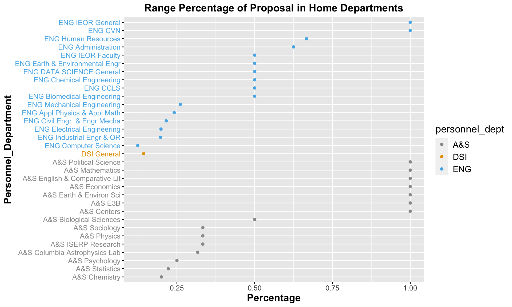

Chapter 5 Personnel Home Department
As can be seen from the above cleveland dot plot, the majoority of proposals are participated by DSI, ENG and A&S department. To see which sub-departments contributes most to the number of proposals, I used another cleveland dot plot with the detailed information of sub-departments of DSI, ENG and A&S.
 From the above plot, we notice that DSI only have one sub-department, which is DSI General. In ENG department, ENG Computer Science and ENG Electrical Engineering contributes most to the proposals. In A&S department, A&S Columbia Astropyysics Lab, amd A&S Statistics contributes most to the number of proposals.
From the above plot, we notice that DSI only have one sub-department, which is DSI General. In ENG department, ENG Computer Science and ENG Electrical Engineering contributes most to the proposals. In A&S department, A&S Columbia Astropyysics Lab, amd A&S Statistics contributes most to the number of proposals.
As can be seen from the above plot, the personnel departments with top three variation in proposal numbers over years are A&S, DSI and ENG. This is to some extent consistent with the total number of proposals participated by different departments, while the order of the top three departments are different. In the departments with top three variations, DSI department only has one sub-department, which is DSI General, and it means the proposal variation of this sub-department contributes to all the variation of the whole DSI department. Apart from this department, the other two departments have more than one sub-department, so three separate cleveland dot plots are drawn to show which sub-departments contributes most to the variations.
 It’s clear that the variations have a very strong positive connection with the number of proposals. Therefore, I used another cleveland dot plot to show the normalized variance, which is equal to the range of proposals over years divided by the sum of .
It’s clear that the variations have a very strong positive connection with the number of proposals. Therefore, I used another cleveland dot plot to show the normalized variance, which is equal to the range of proposals over years divided by the sum of .
It’s clear that the variations have a very strong positive connection with the number of proposals. Therefore, I used another cleveland dot plot to show the normalized variance, which is equal to the range of proposals over years divided by the sum of proposals of that school.

As can be seen from the plot, in ENG department, ENG IEOR General and ENG CVN have the highest percentage of variance. In A&S, A&P Political Science, A&S Mathematics, A&S English & Comparative Lit, A&S Economics, A&S Earth & Environ Sci, A&S E3B and A&S Centers have the highest percentage of variance, and the percentages all reaches 100%. Surprisingly, ENG Computer Science, ENG Electrical Engineering, DSI General, A&S Columbia Astrophysics Lab and A&S Statistics, which have very large number of variation in proposals, get relatively low variance in percentage. This may be because the sub-departments with very small number of proposals may vary from 0 proposal in some year to more than one proposals in some other year, then the percentage of variance will be 100%. Comparatively, the sub-departments with large number of proposals are stable in some degree.